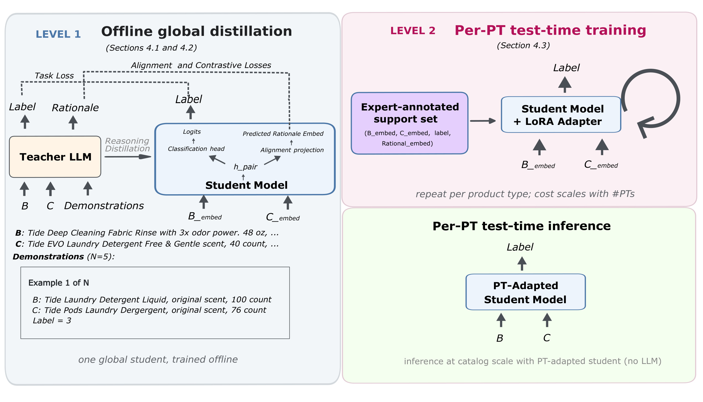
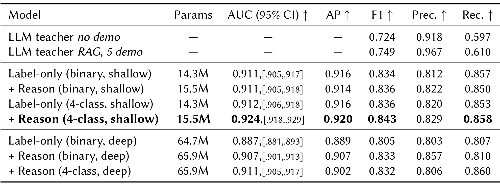
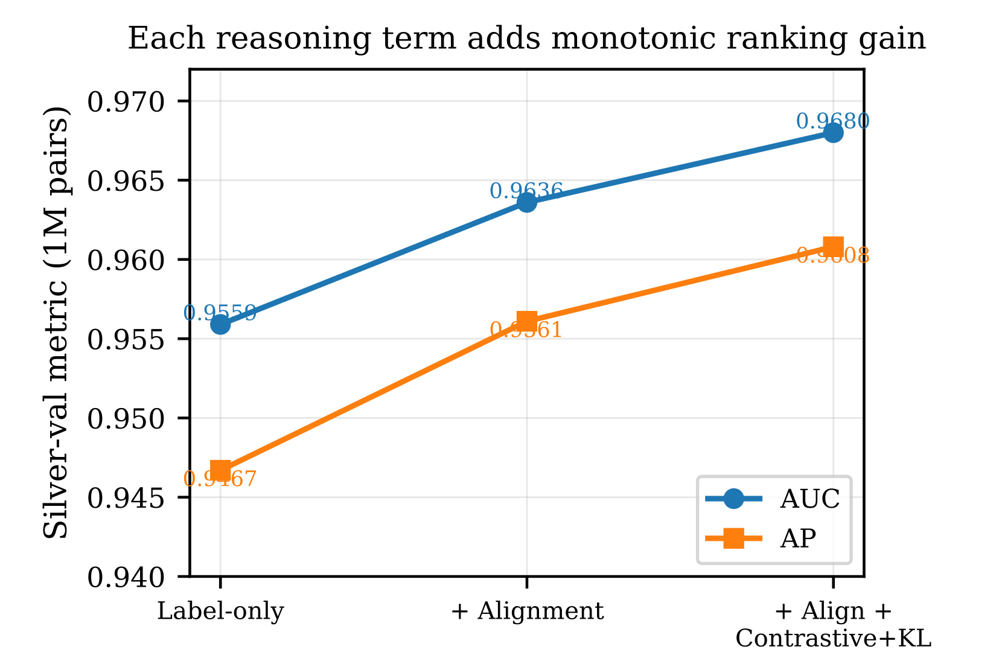
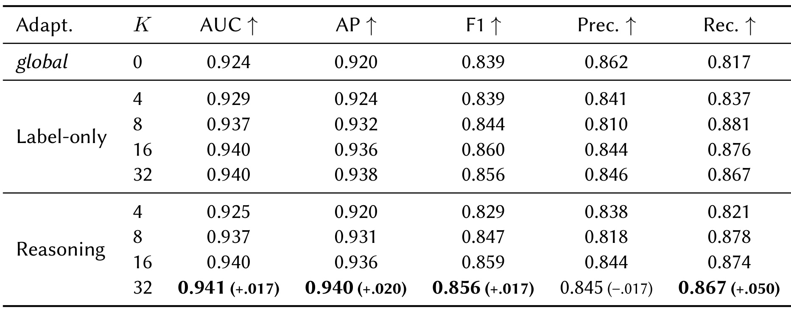
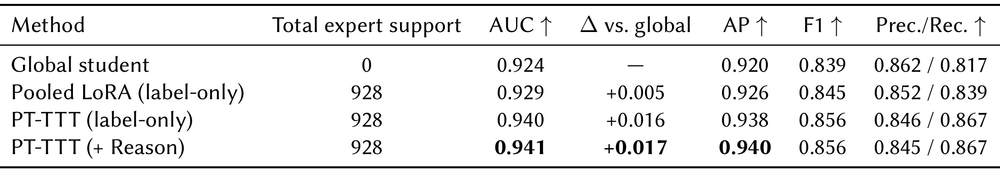
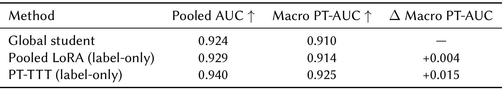
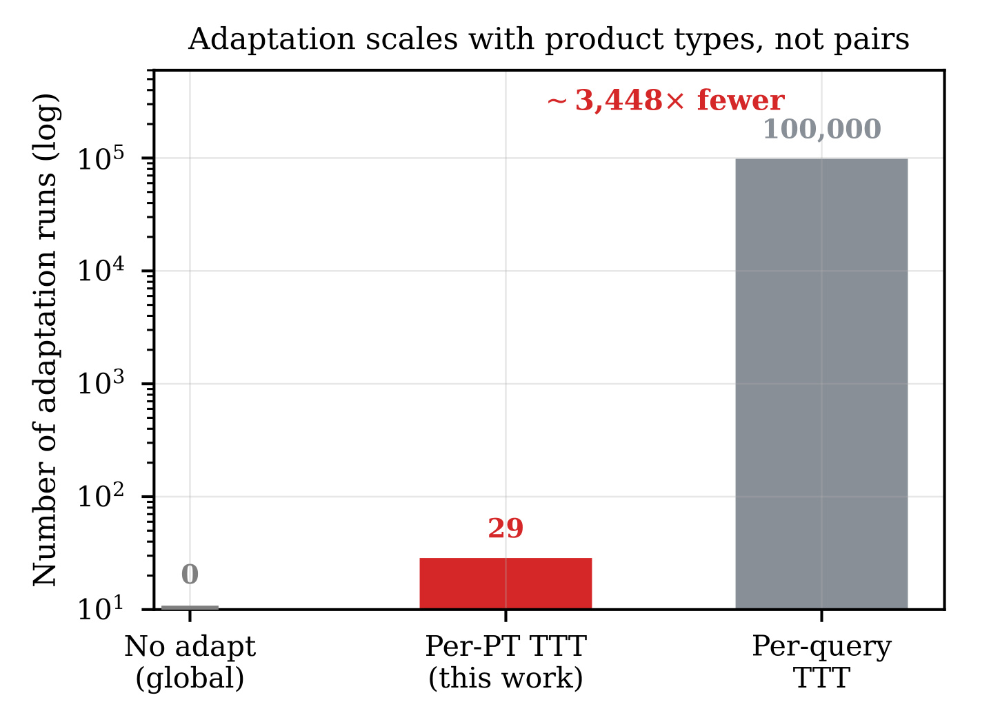
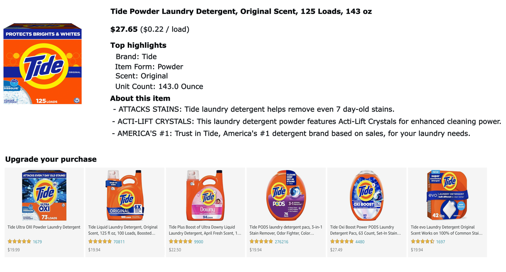

TradeUp：全局蒸馏理由，局部适配商品升级边界
这篇论文研究商品之间的“消费升级”关系：候选商品是否保留原商品的购买意图，同时提供有依据的额外价值。作者 Siliang Liu、Mohammad Ghasemi、Sapan Patel、Amin Banitalebi-Dehkordi 均来自 Amazon Everyday Essentials Technologies，本文以 TradeUp 简称该系统。论文题为 Distill Globally, Adapt Locally: Reasoning Distillation and Product-Type Test-Time Training for Scalable Trade-Up Recommendation，首版于 2026 年 9 月 4 日公开；本次于 2026 年 9 月 8 日核对原文及附录。唯一论文入口为 arXiv:2609.05363。未核验到本文独立代码仓库，下文数值均为论文报告，未独立复现。
商品升级必须在保留顾客购买意图的同时，区分真正的配方、认证或材料收益与同档替代、规格变化和不兼容商品。大语言模型能够判断这些细微差别，但对电商目录中的数亿商品对逐一调用，成本与等待时间使这种做法难以实际运行。
1. 背景和问题
1.1 为什么相似商品不等于升级商品
本文的输入是一件基准商品和一件候选商品，输出是后者能否成为前者的有效升级。这里有两个同时成立的条件。第一，候选必须继续服务同一购物任务，不能因为外观接近或标题共享词汇就被认定合适；第二，它必须具有额外的、与顾客相关的收益，例如配方改进、认证、材料或者品牌定位的提升。仅仅换口味、换包装、增大数量，不能自动构成升级。这一定义使任务比语义相似度更细：同档替代品可能非常相似，却没有升级收益；某种升级可能改用另一产品形态，表面相似度不最高，但在使用便利性上更有价值。
商品关系还具有明确方向。设基准商品为普通配置，候选为具有额外功能的版本，即使两者可以互相替代，也不能把“候选升级基准”和“基准升级候选”混成同一个正例。相比之下，不少相似商品召回只关心两件商品距离是否近，天然偏向对称关系。本文保留输入角色，是因为模型必须知道谁是当前购买对象、谁是要推荐的替代选择。方向性没有被价格规则替代：更贵可以伴随升级，但价格、数量与包装的差异本身都不足以证明升级成立。标注者需要核对收益来源，而不能只对金额或标题词做比较。
升级标准又随品类发生变化。电池的提升依据，与保湿产品的配方或认证、宠物食品的原料来源不同。即使建立统一的“更好”标签，内部承载的判别规则仍不统一。某个属性在一个类型中是核心收益，在另一个类型中可能没有意义。全局模型若只有共享边界，容易把大样本类型的判别习惯推广到其他类型；但为每个类型训练完整模型又会增加维护成本。论文因此把共享知识与类别差异分开处理：大规模蒸馏负责学习通用商品对表示，少量类别专家样本负责调整本地边界。这一设计直接对应标注语义中的异质性，而不是为了增加训练阶段而增加阶段。
1.2 黑箱教师可以提供什么监督
大语言模型适合充当语义标注者，因为它可以联合读取产品描述、品类标准以及人工示范，给出关系标签并解释判断依据。可是目录级计算面对的是大量商品对，而非单个用户请求。即使单次响应看起来可接受，扩展到数亿对时，生成时间与调用价格都可能成为瓶颈。原文引言以成本达到数百万美元、延迟持续数周或数月说明目标运行规模的挑战，这些是作者对应用背景的描述，不能与后文十万对代理测试的实测或估算指标混为一谈。本文的目标是把昂贵语义判断前移，并让最终评分只依赖预计算向量与小型分类器。
教师接口只暴露生成的关系标签与自然语言理由，没有提供内部概率分布或隐藏状态。因此，常见的软标签蒸馏与中间层匹配不能直接套用。作者选择先把理由编码为固定长度向量，再约束学生的商品对表示与其对齐。这个选择将语言解释转化为训练目标，同时避免学生在推理时生成解释文本。需要谨慎理解“理由蒸馏”：生成的理由可能合理，却不保证忠实呈现教师的内部决策过程。论文也明确将其当作辅助语义目标。最终学生学到的是有利于关系分类的表示结构，并没有获得可直接观察的逐步语言推理链。
四类标注为这一结构提供了支点：同档或相似、基准升级候选、候选升级基准、不兼容或不具有有意义的可比性。业务最终需要的是第三类概率，但训练时保留其他三类可以避免把“方向反了”“同档”“任务不一致”压成一种负例。理由经常就在解释这些差别。如果把所有负类合并，而理由表示继续强调不同原因，任务目标与辅助目标之间可能缺少可承接的语义结构。论文通过同一浅层架构下的二分类与四分类对照检验这一点。其结论应理解为标签粒度与辅助语义监督的相互作用，而不能概括成“理由越长或越多越好”。
1.3 数据边界决定结果能说明多远
人工语料共含一万七千二百个商品对，覆盖二十九个商品类型。其中八千八百四十八对构成教师示范池及类别适配支持池，另外八千三百五十二对构成人工金标测试集。原文在每个类型内对选定商品穷举配对，并采用固定的基准与候选顺序。银标则从公开商品数据中的一万二千八百三十件商品出发，在类型内部构造候选对，再用标题与描述嵌入过滤不太可能满足同一购物意图的配对，得到约一百零二万条教师标注。这里的筛选意味着评测并非在所有任意商品组合上识别升级，也没有涵盖候选召回遗漏本身。
人工测试集与银标、示范支持池之间按商品对不重叠。这能排除完全相同的一对商品被当作训练或支持样本后又进入测试，但不能排除同一件商品参与不同配对，也不能排除同品牌产品跨集合出现。严格的新商品、新品牌泛化仍未得到证明。类似地，二十九个已覆盖类型内的适配，不能推出未见类型迁移效果。读者应将实验理解为固定类型集合上的受控关系分类比较，不能因为数据源公开，就认为完整标注、教师输出和运行流程都已经可复现。
本文也没有把这项任务定义成端到端个性化推荐。商品关系分数位于候选排序上游，用于判断哪些候选具有升级资格；用户是否偏好这类收益、是否接受价格、最终点击或购买什么，仍取决于后续排序和展示策略。没有用户行为目标、时间序列偏好建模或线上随机实验，就不能把离线关系分类的提升直接解释成转化率提升。这个任务界定有助于看清贡献：它尝试把专家和大模型的商品知识变成可扩展的目录级关系信号，为后续推荐提供输入，而不是声称已经完成全部推荐决策。
2. 方法
2.1 嵌入对学生架构
教师离线读取基准、候选描述与商品类型标准，使用冻结的 bge-base-en-v1.5 把拼接后的商品对文本编码，并在同类型人工示范中按欧氏距离取最近五例，不按关系标签挑选，且示范不得与待标注对重复。教师输出四类标签与最多两句简洁理由，理由再经同一冻结编码器转换为七百六十八维向量。学生每件商品只接收一个预计算的七百六十八维嵌入，以基准分支、候选分支及有序基准到候选分支处理，随后拼接表示与分类。这使教师文本分析的成本由离线语料构建承担，目录评分时不再读取理由或调用教师。

Figure 1 左侧是全局学生的训练过程：教师从描述与示范中产生关系标签和理由，学生既受分类目标约束，也受理由向量目标约束。右上方代表第二层学习，专家支持集对冻结学生上的轻量适配器产生梯度；右下方才是适配后的目录评分。图中的循环箭头发生在每个商品类型的适配过程，不是每个商品对都启动一次模型训练。两阶段还复用了同一人工示范池，因此它们的监督来源不能当作彼此完全独立。图内绿色区域没有教师或理由编码器，准确表达了作者消除生成式推理开销的路径，但并不意味着整个系统从数据构建到更新都没有大模型成本。每个新版本仍需考虑教师标注、向量预计算与类别适配的离线成本。图内标为推理的输出在实现中是关系分数，可以再取第三类概率用于升级排序，而非为顾客生成一段解释。这样阅读三个区域，才能把模型语义来源、局部规则学习以及最终服务依赖分清楚。
分支名称包含注意力，但单向量输入使注意力权重恒为一。 原文主文与附录均明确指出，每个商品是长度为一的序列，自注意力没有多个位置可选，交叉注意力的键值侧同样只有一个元素；这不能描述成内容相关的词元选择。整体方向性来自不对称的角色、独立分支参数和有序拼接。对应原文式一、二，有：
符号解释：$d=768$，$h_b$ 与 $h_c$ 分别为基准和候选分支最终表示，$z$ 为有序分支输出，分号表示拼接，$L_s,L_x$ 是相应层数；$\hat r_i$ 是学生预测的理由向量，线性投影把二千三百零四维配对表示映射回七百六十八维理由空间。分类头隐藏层为五百一十二、二百五十六、一百二十八维，采用 ReLU 和零点三丢弃率。浅层每分支一层，深层每分支五层；浅层仅标签模型约一千四百三十万参数，带理由投影约一千五百五十万。投影只在训练和需要理由监督的适配阶段使用，实际评分可去除，因此不能把训练参数增量等同于永久推理开销。
2.2 学生模型训练目标
监督标签既支持二分类，也支持四分类。二分类将第三类作为正例，其余全部视为负例，采用加权焦点损失；四分类保留原始标签结构，采用加权交叉熵。把原文附录式十二、十三写在一起，可以直接看出两者保留信息的差异：
这里 $N$ 是批量样本数，$g$ 是分类分数，$p_i=\sigma(g_i)$ 为二分类概率，$w$ 是类别权重，$\gamma=2$ 使易分样本的贡献下降；四分类的最终升级分数为 $s(b,c)=\operatorname{softmax}(g)_3$。二分类权重由验证选择，原文没有给出足以复原所有数据配置的具体类别权重，因此复现时不能任意填值后声称完全一致。四类结构把三种不同负例分开，给理由中的方向、档次和兼容性提供独立判别位置。辅助蒸馏首先以平方误差匹配每对商品的理由向量，再通过批内对比约束不同样本间的关系，分别对应式三与式十四：
$r_i^{(t)}$ 是冻结编码器得到的教师理由向量，波浪号表示向量经过二范数归一化，$\tau=0.07$ 控制对比分布的尖锐程度。平方误差为每例提供目标位置，InfoNCE 把当前配对对应的理由作为正例，其他批内理由作为负例，避免仅逐点靠近却失去区分性。不过同类型不同商品对可能有相同升级原因，其他理由未必是真负例，这也是批内对比的隐含约束。作者另用关系 KL 匹配教师与学生的配对相似度分布，再组成全局目标：
$P^{(t)},P^{(s)}$ 表示理由空间的相似性分布，$T=1$，$\lambda_{\mathrm{KL}}=0.05$，全局对齐与对比权重分别为零点一和零点零一。关系 KL 试图保留完整相似性结构，而不仅是正确配对占第一名；原文只给出这一高层定义，对分布构造仍需实现细节才能逐项复现。优化采用 AdamW，初始学习率万分之一、权重衰减百分之一，余弦降至十万分之一，梯度范数裁到一，并按银标验证指标早停。这些损失塑造的是判别表示；学生没有理由词元解码器，不能把表示对齐解释成其能够在线输出同质量推理过程。
2.3 商品类型测试时训练
第二层固定全局学生，在分类头与理由投影线性层插入低秩适配器。原文式十七以 $W'=W+(\alpha/\rho)BA$ 表示修改，其中 $W$ 保持冻结，$A,B$ 为可学习低秩矩阵，秩 $\rho=8$、缩放 $\alpha=16$，总可训练量约六万七千参数。每类从同一零增量适配器初始化开始，支持样本按类别平衡抽取，避免前一商品类型的更新传给下一类型。它使用人工标签，因此更精确的名称是有监督少样本测试时适配，而不是无监督熵最小化。原文式五为：
$S_t$ 是商品类型 $t$ 的支持集，$K$ 为每类支持样本数量，$\theta_0$ 是固定全局参数，$\varphi_t$ 是该类型适配参数，$\oplus$ 表示将增量应用于模型。仅标签版本设置 $\lambda_{\mathrm{reason}}=0$，理由版本设置为零点一，两者使用完全相同的样本和适配结构。支持集很小且类型同质，因此第二阶段取消对比项，避免缺乏可靠负例；只保留标签及可选的逐点理由对齐。算法使用学习率千分之一的 AdamW 更新五十步，然后切到评估模式为该类型无标签商品对评分。适配被该类型所有商品对分摊，处理下一类时恢复初始适配器。原文伪代码在完成一类评分后丢弃该类增量，这适合离线分组评分；如果要长期缓存多类适配器，是进一步的部署选择，不能当作论文已经验证的在线实现。
3. 实验结果
3.1 评测协议与可比性
全局学生训练使用 1,019,241 个银标商品对，按商品类型和关系类别分层做九比一训练、验证划分；模型、检查点和超参根据银标验证集选择，固定后再到 8,352 对人工金标评测。AUC 和 AP 不依赖分类阈值，F1、精确率和召回率则依赖运行点。主表为每个模型在银标验证上选择最佳 F1 阈值后应用到金标，适配表统一使用 0.45。因此同一个全局模型在主表和适配表的 F1 不同，并不表示重训或数据更换。金标 AUC 置信区间使用两千次非参数自助重采样，模型差异使用同一组重采样索引的配对比较。置信区间说明固定评测样本下的估计不确定性，不能覆盖未见品牌、新类型或生产流量分布变化。
3.2 理由蒸馏依赖四分类结构

Table 1 中最有解释力的是浅层四行组成的受控比较。二分类仅标签 AUC 为 0.911，加入理由后仍为 0.911；四分类仅标签为 0.912，加入理由后升到 0.924，AP 从 0.916 到 0.920。仅增加标签类别而不蒸馏理由，改善很小；仅加入理由而合并负例，也没有明显改善。两者结合才出现稳定提升，因此不能把收益单独归因于多了约一百二十万参数的投影。四分类理由模型的 AUC 置信区间为 [0.918,0.929]；使用未四舍五入预测做配对比较，作者给出差值 +0.013、区间 [+0.010,+0.016]，与表面相减得到 +0.012 的差别来自显示精度。较深的仅标签二分类模型有 64.7M 参数，AUC 却为 0.887，说明此设置下增大容量没有替代有效监督。这个对照支持“浅层学生足以承接本任务监督”，不证明所有商品关系任务都应采用小模型，更不能推出一般性的模型规模规律。
教师对照必须连同运行点阅读。检索增强、五示范教师精确率 0.967、召回率 0.610、F1 为 0.749；浅层四分类理由学生分别为 0.829、0.858、0.843。学生通过恢复更多正例获得更高 F1，同时付出了精确率下降的代价。教师只返回离散标签，所以主表没有其 AUC/AP；不能把教师当成已做完阈值扫描的最优排序器。无示范教师的 F1 为 0.724，五示范升到 0.749，说明示范有作用，但论文没有穷尽提示、检索与示范数量。把这一结果写成“学生全面超过前沿大模型”会越过证据边界，它只优于当前配置的教师在当前数据分布上的 F1 运行点。

Figure 9 在银标验证部分依次添加理由对齐、再添加 InfoNCE 与关系 KL，AUC 为 0.9559、0.9636、0.9680，AP 为 0.9467、0.9561、0.9608。它支持辅助目标在拟合教师监督时分别提供增量，但横轴最后一项把对比和 KL 合在一起，不能据此断言关系 KL 单独贡献多少。它也不是人工金标上的同组消融，因此不能直接用这里的增量解释主表中从 0.912 到 0.924 的全部人类判断收益。银标反映与教师输出的一致性，金标反映与人工标准的一致性，二者的误差来源不同。原文附录还讨论深层模型对教师噪声的过拟合，但 Figure 2 与 Figure 6 对深层模型银标相对表现的文字陈述存在不完全一致之处；本笔记因此以主表可核对的金标结果为依据，不把该噪声解释写成已经严格识别的因果结论。要验证噪声机制，需要直接比较教师错误分层、干净标签训练和容量控制，而不只是观察两个评测集的落差。另一个尚缺的控制是打乱理由与商品对的对应关系，或给所有样本相同理由；它可以检验额外训练约束的效果是否确实来自匹配的理由语义。
3.3 支持规模与理由再利用

Table 2 使用同一冻结全局模型作为起点，比较每类型四、八、十六、三十二条支持样本。仅标签适配的 AUC 从 0.929 增到 0.937、0.940、0.940，理由适配为 0.925、0.937、0.940、0.941；全局起点是 0.924。十六到三十二条时收益趋于平台，且在四条极小支持下理由适配反而弱于仅标签，不能说理由在两个阶段都稳定有利。三十二条理由适配 AP 到 0.940，相对起点增加 0.020。在固定 0.45 阈值下，召回从 0.817 到 0.867，精确率从 0.862 到 0.845，F1 从 0.839 到 0.856，改善仍伴随运行点权衡。AUC/AP 随预算增加基本改善，不代表 F1 严格单调：仅标签十六条 F1 为 0.860，高于三十二条的 0.856。分类阈值没有随规模重新调优，排序变好和固定阈值分类变好是两个不同问题。
这里的支持是从专家池抽取的人工标注，而不是利用测试对的真实标签进行更新。测试对只参与最终评分，但支持集合的构成、每类样本平衡和优化随机性都可能影响适配效果。两种目标在相同支持和适配架构下比较，能较干净地观察理由再利用的边际贡献；结果显示这一贡献很小，全局表示已经吸收过理由后，局部更新更需要类别标签来移动边界。原文没有完整报告所有支持抽样种子的置信区间，因此 0.001 级差异应保守阅读。更稳妥的实践含义是先建立仅标签类别适配基线，再判断理由重用是否值得增加投影训练依赖，而不是默认第二阶段必须复刻所有全局损失。
3.4 排除额外人工监督和跨类缩放

Table 3 控制了一个容易被忽视的混杂因素：全局学生由教师银标训练，适配器却直接接触人工标签，所以适配优于全局可能只是人工监督更准确。作者把二十九类各三十二条、合计九百二十八条相同支持样本合并，训练一个不区分类别的 LoRA，得到 AUC 0.929、AP 0.926；使用相同总量但每类独立训练，仅标签 PT-TTT 达到 AUC 0.940、AP 0.938。这个差异说明人工标签的直接优化解释了一部分收益，但类型专用边界还带来额外改善。理由版本到 0.941、0.940，又只多了一点。实验控制的是支持样本总量与全局起点，并不等于所有模型自由度完全相同：分类型拥有多套参数，而合并版本只有一套。因此它证实当前分类型策略比单一合并适配器更有效，但仍应与容量匹配的类型条件模型比较，才能进一步识别“独立优化”相对“知道类型”的必要性。每类各自更新也意味着总适配步骤与合并模型的优化预算需要另行对齐，相同标注数量本身并未控制全部计算因素。

Table 4 回答另一种替代解释：如果适配器只是把某些类别整体分数抬高、另一些整体压低，把所有样本混在一起计算的 AUC 也可能提高，即使每类内部正负例排序完全没有改善。作者分别在每个商品类型内部算 AUC，再对二十九类不加权平均，得到宏平均类别内 AUC。全局为 0.910，合并 LoRA 为 0.914，分类型仅标签适配为 0.925。类别内增加 0.015，说明改善并非完全来自跨类别分数尺度重排。宏平均使每类具有相同权重，与样本量较大类别影响更大的全体指标回答不同问题，所以不能直接把两个 AUC 当同口径相减。这个对照增强了局部判别确实变好的证据，却仍没有排除更简单的类别条件分类头或类别专用校准方法；后者若改变的不只是单调分数变换，也可能改善判别。进一步实验应同时保留全体指标、宏平均和逐类置信区间，避免总体改善遮蔽小类别退化。小类别的估计方差通常更值得关注，而宏平均不会因为其样本少就自动降低权重，这也是逐类不确定性报告的价值。
3.5 目录成本和展示案例

Figure 11 用十万商品对、二十九个类型的示意负载说明次数缩放：每请求更新要十万次拟合，每类型更新只需二十九次，相差约三千四百四十八倍。纵轴是适配运行次数并采用对数刻度，不是毫秒延迟、吞吐率或美元成本；“无适配”的零值在图上通过文字标注，不能把柱高理解为存在实际训练开销。实际每次更新的支持规模、五十步计算量与数据搬运仍要计入。因此次数差展示的是计算组织方式的优势，不能直接替代端到端性能测量。它也提醒读者，PT-TTT 的粒度是已知商品类型，类型体系增加或频繁变化时，适配维护成本将跟随类型数量和刷新频率增长。文中策略适合在目录批量评分前分组处理，不是每个顾客请求都在线做梯度下降。把这一点与框架图绿色评分区域对应，就能看清为什么适配不会自动吞掉小学生的推理优势。
效率正文另报告，在约十万随机抽取商品对的代理目录上，蒸馏学生运行于单台八卡机器，相对直接大模型推理约快五千倍，估算推理成本约低一万倍。这个结果的可信表述应保留“代理目录”“八卡”“估算成本”和“相同工作负载”四个限定。原文没有提供足够完整的硬件型号、教师价格、并发限制、绝对耗时及所有离线步骤摊销明细，本次无法独立重算这些倍数，更不能据此给真实服务预算。可以确定的结构性事实是，目录评分不再包含文本生成、理由编码或理由投影；可以合理期待生成成本大幅下降，但具体倍数仍由作者实验配置决定。论文没有给出线上点击率、转化率或交易额增量。

Figure 12 是面向顾客的升级推荐组件示例，基准商品为洗衣粉，候选包含增强清洁力的粉剂、液体洗涤剂、定量洗衣凝珠以及洗衣片等形态。所有候选仍服务洗衣任务，潜在收益可来自清洁表现、预先分装的便利性、浓缩配方或与可持续性相关的属性。图中的商品说明属于原始界面对象，不是本文添加的独立性能证据。它展示关系分数如何进入产品体验，却没有证明每位顾客都会把每种形态视为升级，也没有展示用户实验或实际流量指标。作者说明可按升级强度递增排列，以先展示更容易接受的升级，也可以结合评分、顾客相关性与价格重排。因而模型输出只是排序输入之一，界面最终顺序不必等于升级概率的降序。读这个案例应关注“同一购买任务下有哪些可解释收益维度”，同时保留个人使用习惯、预算和产品兼容条件对最终推荐的约束。
4. 总结
4.1 我如何理解本文贡献
本文的主要价值是把监督结构、模型成本和类别差异放到同一个可检验的设计里。全局阶段保留四类关系，并把黑箱教师的简短理由变成表示约束；类别阶段用人工少样本调整局部边界；评分阶段只消费预计算商品向量。最扎实的发现不是某个孤立最高分，而是二分类与四分类的理由增益差异、同等人工支持下的合并对照，以及类别内宏平均仍然改善。三者一起支持一个有边界的结论：理由适合帮助全局表示学习，第二层的主要改善来自商品类型专用监督。它为目录关系建模提供了较清楚的监督分工，但还不是普遍适用的推理压缩定律。
4.2 局限与后续跟进
- 实体隔离不足。 当前明确的是商品对不重叠，未保证商品或品牌隔离。相同商品参与不同配对可能降低测试难度，未来必须在严格实体隔离下重测，才能回答新商品进入目录时是否仍有收益。
- 类型范围有限。 证据覆盖二十九个已知类型，每类适配都依赖专家支持集；没有建立未见类型、极少样本类别或者类型定义变化下的可靠性。支持样本选择及优化随机性也可能影响结果。
- 更简单的局部基线尚不充分。 合并适配与类别内 AUC 对照排除了两种主要解释，却没有完全分离类别适配、类别条件建模和简单校准。独立适配器的参数总量更大，容量匹配也值得补充。
- 教师与解释的边界。 教师配置没有做穷尽优化，生成理由并非内部思维的忠实记录，银标消融不能直接代替人类金标消融。学生 F1 更高来自召回和精确率交换，不构成全面优于教师的证据。
- 生产口径缺失。 金标类比例可能不同于线上候选流，精确率与 F1 不能直接视作真实生产值；代理目录的速度和估算成本也不能替代全链路账单。组件示例没有提供用户行为增益。
后续首先应补一个严格商品与品牌隔离的实验，并单独留出整类商品，报告逐类型和跨类型指标，检验当前收益能否走出已知实体与类别集合。其次，用相同人工预算比较类别条件分类头、容量匹配的多头模型、简单校准与独立 LoRA，并对支持抽样重复多次，报告差值区间，而非只比较三位小数的最高分。第三，应把教师标注、预计算向量、适配更新和评分分别计时计费，在真实候选分布下选择运行点，再用受控流量实验观察顾客是否接受推荐。第四，可以验证理由是否必须保留完整向量：按升级属性拆分的结构化标注或更小投影是否具有类似效果，这将直接检验收益来自语义内容还是特定蒸馏形式。
从阅读与复现优先级看，我会先复核同架构四分类理由对照及等量人工支持对照，然后再投入更复杂的部署优化。前两项决定了学习信号是否有用，后者才决定这种信号能否经济地覆盖目录。只有当实体泛化、类型局部收益和真实运行成本都被分别验证，才能把这项离线关系识别能力转化为可信的产品推荐能力。